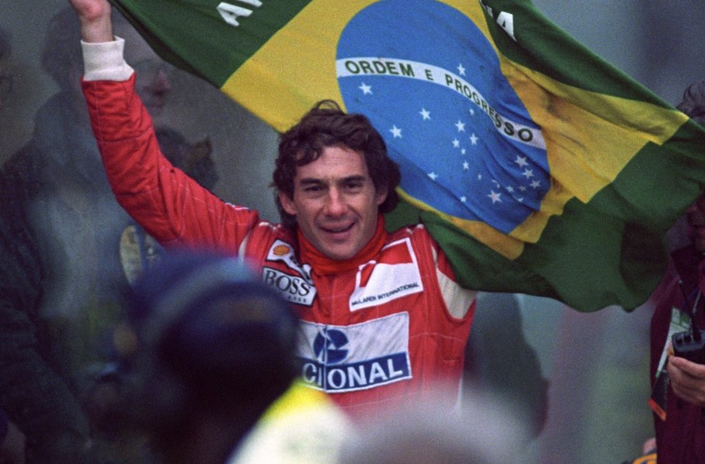
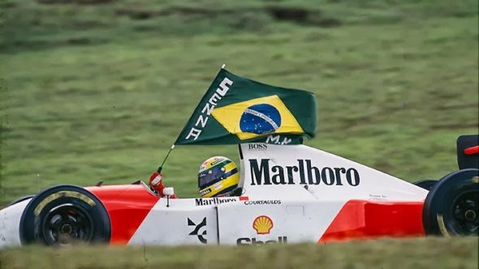

Ayrton Senna do Brasil
Muitos brasileiros tiveram o prazer de assistir os anos dourados do Brasil na Formula 1, muitos, até, apenas ligavam a televisão aos domingos por se sentirem representados e, no fim, foi isso que Ayrton Senna fez por nós brasileiros, nos representou.
Esse que vos digita nasceu no início do século XXI e, portanto, não conseguiu ver com os próprios olhos a maneira única de pilotagem daquele que para muitos é o melhor de todos os tempos da Formula 1. Contudo, graças a internet, é possível pesquisar sobre os feitos que Ayrton Senna conquistou e, isso, ficará na história para sempre. Após anos passados desde seu primeiro campeonato, as pessoas saberão quem é Senna, suas conquistas e a alegria que ele deu ao povo brasileiro.
Em sua McLaren, conquistou três títulos: 1988, 1990 e 1991. Além disso, conquistou 65 poles, 80 pódios e 41 vitórias em corridas, por fim, mas não menos importante, destacou sua maneira de pilotar na chuva, bem como se tornou o rei de Mônaco, além de, claro, conquistar sua primeira vitória no GP de Interlagos em 1991.
Abaixo, dois vídeos que monstram como Ayrton Senna era habilidoso, inteligente e capaz quando estava no cockpit:
Para a história
Por fim, Senna fez história e colocou o Brasil no centro da Fórmula 1. Suas habilidades são lendárias e, com certeza, os momentos mais felizes ficarão para sempre em nossa memória.
